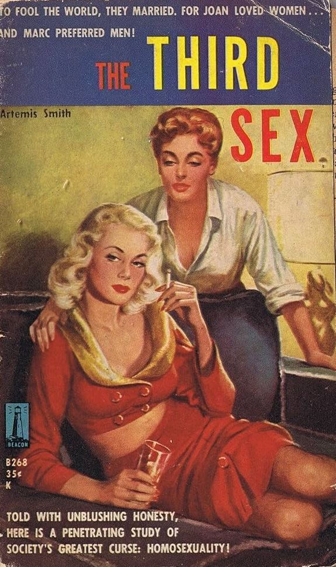

| HOME | SITE MAP |
Compiled by Laure Neuville (May 1996).
Placed on this site with permission of the author.
Author's Note: This is not an exhaustive bibliography on the subject. It only contains the texts for which I had complete bibliographical data. Wide surveys of lesbian literature such as Jeannette Foster's Sex Variant Women in Literature or Bonnie Zimmerman's The Safe Sea of Women generally have at least a few paragraphs about pulp novels; the same goes for socio-historical surveys such as Lillian Faderman's Odd Girls and Twilight Lovers or John D'Emilio's Sexual Politics, Sexual Communities. Because the space given to pulp novels is minimal in these books, they are not included here.

BIBLIOGRAPHY:
Lesbian Identity and Pulp Novels, Off our Backs, vol. IXX, no 8, August/September 1989, p. 10. [report on a paper given by Jane Lindsay Miller at the National Women's Studies Association Conference, Towson State University, Maryland, June 1989]
1950's Lesbian Novels Reissued by Naiad Press, Publishers Weekly, 222, Feb. 11th, 1983, p. 44.
Those Wonderful Lesbian Pulps: A Roundtable Discussion, part I, San Francisco Bay Area Gay & Lesbian Historical Society Newsletter, vol. 4, no 4, Summer 1989, p. 1-4.
Those Wonderful Lesbian Pulps: A Roundtable Discussion, part II, San Francisco Bay Area Gay & Lesbian Historical Society Newsletter, vol. 5, no 1, Fall 1989, p. 7-8.
ADAMS, Kate. "Making the World Safe for the Missionary Position: Images of the Lesbian in post-World War II America" in Lesbian Texts and Contexts: Radical Revisions, Karla JAY and Joanne GLASGOW (eds), New York/London, New York University Press, 1990, p. 255-274.
ALLISON, Dorothy. "A Personal History of Lesbian Porn", New York Native, May 24-June 6, 1982, p. 22-23. Reprinted in Allison's essay collection Skin.
BANNON, Ann. [Letter], The Ladder, vol. 5, no 1, October 1960, p. 24-25.
BANNON, Ann. Then and Now: Speaking to Women Through Fiction, Hot Wire, vol. 4, no 2, March 1988, p. 48 + 62. [original publication: Hot Wire, vol. 1, no 1, Nov. 1984]
BARALE, Michle Aina. When Jack Blinks: Si(gh)ting Gay Desire in Ann Bannon's Beebo Brinker in The Lesbian and Gay Studies Reader, H. ABELOVE, M.A. BARALE and D. M. HALPERIN (eds), New York/London, Routledge, 1993, p. 604-615.
BATSLEER, Janet. Pulp in the Pink, SpareRib, August 1981.
BENNS, Susanna. Sappho in Soft Cover: Notes on Lesbian Pulp, Fireweed, 11, 1981, p. 36-43. [reprinted in Fireworks. The Best of Fireweed, Makeda SILVERA (ed.), Toronto, Women's Press, 1986, p. 60-68.]
CHRISTIAN, Paula. "Another Author Heard From...", The Ladder, vol. 5, no 5, Feb. 1961, p. 19-20.
CORINNE, Tee and OVERMAN, Caroline. Valerie Taylor Interviewe, Common Lives/Lesbian Lives, 25, Winter 1988, p. 61-72
FORTIER, Muriel. La littrature populaire lesbienne des annes 1950, in Actes du colloque international Homosexualit et lesbianisme: mythes, mmoires et historiographie, tenu la Sorbonne, Paris, 01/12/1989, GREH et al., Lille, Cahiers Gai-Kitsch-Camp, 1990, srie histoire, no 2, p. 48-66.
FORTIER, Muriel. Correspondance - Livres la page, Treize, vol. 10, no 1, hiver 1993, p. 26-27.
GRIER, Barbara [signed B. G.]. Ann Aldrich Does a Re-take, The Ladder, vol. 2, no 4, January 1958, p. 12.
GRIER, Barbara [signed B. G.]. Time Has Brought A Change, The Ladder, vol. 2, no 6, March 1958, p. 18.
GRIER, Barbara [under the pseudonym Gene DAMON]. Lesbian Literature in 1959, The Ladder, vol. 4, no 5, February 1960, p. 14-17.
GRIER, Barbara [under the pseudonym Gene DAMON]. Lesbian Literature in 1960, The Ladder, vol. 5, no 7, April 1961, p. 12-13 + 16-19.
GRIER, Bannon [under the pseudonyme Gene DAMON]. Lesbian Literature - 1961, The Ladder, vol. 6, no 5, February 1962, p. 6-11.
GRIER, Barbara [under the pseudonym Gene DAMON]. [review of] The Stange Women, The Ladder, vol. 6, no 10, July 1962, p. 25.
GRIER, Barbara [under the pseudonym Gene DAMON]. Lesbian Literature in 1962, The Ladder, vol. 7, no 4, January 1963, p. 6-13 + 26.
GRIER, Barbara [under the pseudonym Gene DAMON]. [review of] We Two Won't Last, The Ladder, vol. 8, no 1, October 1963, p. 18-20.
GRIER, Barbara [under the pseudonym Gene DAMON]. Lesbian Literature in '63, The Ladder, vol. 8, no 5, February 1964, p. 12-19.
GRIER, Barbara [under the pseudonym Gene DAMON]. Lesbian Literature in '64, The Ladder, vol. 9, nos 5/6, February/March 1965, p. 19-23.
GRIER, Barbara [under the pseudonym Gene DAMON]. Lesbian Literature in 1965, The Ladder, vol. 10, no 7, April 1966, p. 17-19.
GRIER, Barbara [under the pseudonym Gene DAMON]. "The Lesbian Paperback I", Tangents, vol. 1, no 9, June 1966, p. 4-7. GRIER, Barbara [under the pseudonym Gene DAMON]. The Lesbian Paperback II, Tangents, vol. 1, no 10, July 1966, p. 13-15.
GRIER, Barbara [under the pseudonym Gene DAMON] and STUART, Lee. The Lesbian in Literature. A Bibliography, San Francisco, Daughters of Bilitis, 1967.
GRIER, Barbara [under the pseudonym Gene DAMON]. Lesbian Literature, 1966, The Ladder, vol. 11, no 6, April 1967, p. 8-13.
GRIER, Barbara [under the pseudonym Gene DAMON]. Lesbian Literature, 1967, The Ladder, vol. 12, no 7, May/June 1968, p. 7-15.
GRIER, Barbara [under the pseudonym Gene DAMON]. The Lesbian Paperback, The Ladder, vol. 13, nos 9/10, June/July 1969, p. 18-23. [reprint of the Tangents articles].
GRIER, Barbara [under the pseudonym Gene DAMON], WATSON, Jan and JORDAN, Robin. The Lesbian in Literature. A Bibliography, The Ladder, Reno, 1975.
GRIER, Barbara (also known as Gene Damon). Lesbiana. Book reviews from The Ladder , 1966-1972, Reno, Naiad Press, 1976. [The Lesbiana columns, which were a monthly feature of The Ladder, started in March 1957. The ones published before December 1966 have not been collected, but they often featured pulp titles.]
GRIER, Barbara and REID, Coletta. The Lesbian Paperback, The Lesbians' Home Journal, Baltimore, Diana Press, 1976.
GRIER. Barbara. The Lesbian in Literature, Tallahassee (Florida), Naiad Press, 1981.
GRIFFIN, Gabriele. From Twilight to Limelight: Writings on Lesbians in the 1950s and 1960s, chapter 2 in Heavenly Love? Lesbian Images in Twentieth-Century Women's Writing, Manchester/New York, Manchester University Press, 1993, p. 40-61.
HAMER, Diane. I Am a Woman: Ann Bannon and the Writing of Lesbian Identity in the 1950's in Lesbian and Gay Writing: an Anthology of Critical Essays, Mark LILLY (ed.), London, MacMillan, 1990, p. 47-75.
JUHASZ, Suzanne. Reading from the Heart: Women, Literature, and the Search for True Love, New York/London, Viking Penguin, 1994.
KOSKI, Fran and TILCHEN, Maida. Some Pulp Sappho, Margins, Special Issue: Lesbian Feminist Writing and Publishing, no 23, August 1975, p. 41-45. [Reprinted in Lavender Culture, JAY, Karla and ALLEN, Young (eds), New York, Jove/Harcourt, Brace Jovanovich, 1979, p. 262-274.]
LOOTENS, Tricia. Ann Bannon: a Lesbian Audience Discovers its Lost Literature, Off Our Backs, vol. 13, no 11, December 1983, p. 12-20.
LOOTENS, Tricia. Ann Bannon: a Writer of Lost Lesbian Fiction Finds Herself and Her Public, Off Our Backs, vol. 13, no 11, December 1983, p. 14-15.
LOWENSTEIN, Andrea. Sad Stories: A Reflection on the Fiction of Ann Bannon, Gay Community News, vol. 7, no 43, May 24, 1980.
LYNCH, Lee. Cruising the Libraries in Lesbian Texts and Contexts: Radical Revisions, Karla JAY and Joanne GLASGOW (eds), New York, New York University Press, 1990, p. 39-48.
MILLER, Jane Lindsay. Lesbian Identity and the Pulp Novels. Paper presented at the 1989 National Women Studies Association Conference at Towson State University (Maryland), June 1989.
NESTLE, Joan. 'Desire so Big It Had to Be Brave': Ann Bannon's Lesbian Novels, unpublished article, January 1983.
NEUVILLE, Laure. Le roman d'amour lesbien existe-t-il?: le cas des 'pulps" des annes 1950 et 1960, unpublished paper presented in the session Roman d'amour ancien et moderne, Congrs de l'ACFAS, McGill University, May 1996.
RUBENS, Charlotte. '50's Lesbian 'Pulp' Author: an Interview with Ann Bannon, Coming Up!, November 1983, p. 16.
RUTHCHILD, Nancy M. Lesbian Books: a Long and Painful Search, Mother Jones, 1, April 1976, p. 63-5.
SILK, Kay. Lesbian Novels in the Fifties, Focus, August 1973, p. 4-7.
SMITH, Artemis. Artemis Smith Speaks for Herself, The Ladder, vol. 3, no 10, July 1959, p. 14-16.
SMITH, Artemis. Artemis Smith Speaks for Herself, The Ladder, vol. 4, no 10, July 1960, p. 15-16.
SMITH, Libby. Lesbian Pulp Novels, 1955-1968. Unpublished article, Department of History, Graduate Division, University of Pennsylvania, 1984.
STRANG, Lennox. The Lesbian in Contemporary Literature, The Ladder, vol. 3, no 5, February 1959, p. 16-18.
TAYLOR, Valerie. Five Minority Groups in Relation to Contemporary Fiction, The Ladder, vol. 5, no 4, January 1961, p. 6-13 + 16-22.
THEODORA. The Life and Death of a Lesbian Novel, The Ladder, vol. 5, no 3, December 1960, p. 16-17.
TILCHEN, Maida. Ann Bannon: The Mystery Solved!, Gay Community News, January 8, 1983, p. 8-12.
USZKURAT, Carol Ann. Process, Perspective, Politics and Meaning: The Search for a Way to Read Lesbian Romantic Paperback Fiction 1950-1990, unpublished paper given at the Women's Studies Network Conference (London, 1990).
USZKURAT, Carol Ann. Mid Twentieth Century Lesbian Romance: Reception and Redress in Outwrite. Lesbianism and Popular Culture, Gabriele GRIFFIN (ed.), Boulder (Colorado), Pluto Press, 1993, p. 26-47.
WALTERS, Suzanne Danuta. As her hand crept slowly up her thigh: Ann Bannon and the Politics of Pulp, Social Text, no 23, Fall/Winter 1989, p. 85-101.
WEINSTEIN, Jeff. In Praise of Pulp: Bannon's Lusty Lesbians, Voice Literary Supplement, no 20, October 1983, p. 8-9.
WEIR, Angela and WILSON, Elizabeth. The Greyhound Bus Station in the Evolution of Lesbian Popular Culture in New Lesbian Criticism. Literary and Cultural Readings, Sally MUNT (ed.), New York/Oxford, Columbia University Press, 1992, p. 95-113.
YUSBA, Roberta. Twilight Tales: Lesbian Pulps, 1950-1960, On Our Backs, vol. 2, no 1, Summer 1985, p. 30-31 + 43.
YUSBA, Roberta. Odd Girls and Stange Sisters: Lesbian Pulp Novels of the '50, Out/look, Spring 1991, p. 34-37.
ZIMMER BRADLEY, Marion. Lesbian Stereotypes in the Commercial Novel, The Ladder, vol. 8, no 12, September 1964, p. 14-19.
ZIMMER BRADLEY, Marion. Writing Gay Novels for Fun and Profit, section 3, Novel Lover, 3, Feb. 15, 1982, p. 1-4. [Although I haven't seen them, Novel Lover, 1 and 2 are probably of interest, as the text published in no 3 is a sequel.]
May be used and/or copied with proper attribution.
Return to the Lesbian History Project Main Page
click